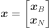
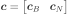
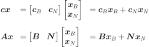
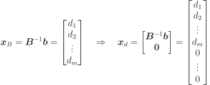
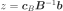
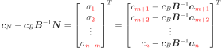
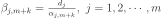
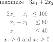

Simplex算法
| 文章分类: | Optimization |
|---|---|
| 创建时间: | 2013年4月 |
算法初始
单纯型算法是求解线性规划模型最有效的算法。根据单纯型算法，如果存在 个约束条件，则最优解不为 0 的变量必然不多于 个。现在求解 约束条件的模型，假设目标函数存在可行解且最优解有限。可以选择 个变量作为 基变量 用于求解，其他变量作为 非基变量 设定为 0。基变量有时也称 基。
单纯型算法的基本步骤如下：
- 选择 个基变量，剩余 个变量为非基变量。令非基变量等于 0；
- 求取基变量的最优解，并用求解得到的基变量和非基变量计算目标函数值；
- 判断目标函数值是否最优。如不是最优解，则返回第 1 步。
单纯型算法基于 标准模型，如果模型不是标准型，则用模型变换方法变换。
选择基变量后，变量和变量的系数就被分为两组：
- 基变量 和非基变量 ，即 
- 基变量和非基变量在约束条件中对应的系数： 和 ，即
- 基变量和非基变量在目标函数中对应的系数： 和 ，即 
- 约束条件中不等式或等式的右边的常数不变，即

算法过程
基本可行解
首先需要根据选定的基变量求解模型。因为 ，所以：
则基变量 的解：

即线性优化模型的一个基本解。对于标准型，因为 ，所以必须满足 。 是优化问题的一个 基本可行解，矩阵 为 可行基。
基本可行解与可行域多面体的顶点顶点对应，就像要判断多面体的顶点是否是最优解一样，需要判断基本可行解是否是最优解。如果不是，则需要调整。
最优解判定
用非基变量表示基变量：
对应的目标函数用非基变量表示：
若非基变量 ，即基本可行解 时，目标函数值 。如果这个基本可行解是最优解，那么该目标函数值就应该是最大可能值。因此即使某个或全部非基变量 不取 0，目标函数值也不会增加。因此对于 必须有 。
令 ：

则基本可行解是最优解的判定条件为：
- 所有 ，且如所有 ，则线性规划问题有唯一最优解。
- 如果所有 时，存在某个（几个） ，则线性规划问题有多个最优解。
- 如果某个 且其对应的 ，则原优化问题有任意最优解。
基变量调整
如果基本可行解不是最优解，那么需要调整基变量，对应的 和 等都会发生变化。调整步骤如下：
- 从值为正的 中选择最大的；
- 在 中找到 对应的第 列 ，该列为 进基列；
- 计算 和 ，求取两个向量的元素比 ，即 。在所有正的 中选择最小的 。
- 在 中找到 对应的第 列 ，该列为 出基列；
- 用进基列代替出基列，并对应地调整 和
 ：
：- 和 增加第 个元素，去掉第 个元素；
- 和 增加第 个元素，去掉第 个元素。
- 利用调整后的基变量重新迭代。
计算程序
GLPK 是最好的优化软件。当然，我用 Go 语言实现的 Simplex 程序也不差。
$ glpsol -m mymodel.mod -o mymodel.sol
.mod 是模型设定文件，如下述模型：

模型设定代码为：
/* Decision variables */
var x1 >=0; /* product 1 */
var x2 >=0; /* product 2 */
/* Objective function */
maximize z: 3*x1 + 2*x2;
/* Constraints */
s.t. Labor : 2*x1 + x2 <= 100;
s.t. Material : x1 + x2 <= 80;
s.t. Demand : x1 <= 40;
end;